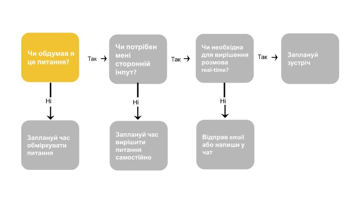

COVID та війна внесли свої корективи, і тепер нам доводиться брати участь у ще більшій кількості зустрічей,
віддалено. А якщо врахувати, що для них ще й не потрібно тепер бронювати переговорки, то все стало гірше.
Doodle’s State of Meetings Report каже, що у 2020-2021 роках кількість відео мітингів
злетіла до небес. Наприклад, дзвонити сам на сам почали на 1230% більше, а кількість групових зустрічей зросла
на 613%. Виглядає переконливо, погодьтесь, але якщо подивитися на
ось цю аналітику від MIT Sloan Management Review, то з’ясується, що лише 50% цих зустрічей
насправді ефективні.
І до всього цього можна додати, що зустрічі займають близько
15% часу компанії, лише в США та
Великобританії у 2019 зустрічі з поганою організацією обійшлися майже в $400 мільярдів. Так, цифра застаріла, але дає розуміння, що з віддаленим режимом пандемії
COVID збитки лише збільшувались.
Отже, як зробити зустріч продуктивною та переконатися, що кожна її хвилина витрачена з розумом. Беручи до уваги
численні дослідження, ці принципи є, загалом, універсальними, тому їх можна застосувати до будь-яких типів
зустрічей.
Які переваги має ефективний командний мітинг
Немає сумнівів, що гарно спланована командна зустріч матиме численні переваги. Кажучи предметно, — кожен добре
спланований командний мітинг допомагає краще зрозуміти зони відповідальності та пріоритети. Але це ще не все!
Коли ви проводите регулярні зустрічі зі своєю командою, це допомагає розвивати культуру спільних цінностей та
відкриває додаткові можливості взаємодії. До речі, саме мітинги є надійнішим джерелом розповсюдження
конфіденційної інформації, особливо, коли треба швидко «приховати докази».
Ось кілька найвлучніших практик, що допоможуть вам збільшити продуктивність та ефективність перед, впродовж
та після мітингу. Отже, до справи!
1. Поважайте час інших людей. Завжди.
Спитайте себе: чи варто взагалі проводити цю зустріч?
Як ми вже з’ясували, всі відвідують багато зустрічей і зазвичай витрачають час не на продуктивну діяльність, а
саме на зустріч. Найважливіше перед плануванням оцінити, чи є гідний привід для живого дискутування, чи ви
можете розв’язати це питання без відриву від основної роботи.
Якщо ваша команда може ефективно впоратися із завданням без відвідування мітингу, то чи є в ньому сенс? Отже,
спитаймо себе: «Do I realy need this meeting?»

Отже, не слід скликати мітинг кожного разу. Краще запитайте в себе, чи ваше рішення про зустріч — це дійсно
найкраще використання робочого часу? Якщо ви після всього сказаного врешті-решт зібралися провести цей мітинг,
то крокуймо далі.
Оберіть правильний час для зустрічі
Якщо ви вирішили провести мітинг, оберіть правильний час. Але спочатку я ознайомлю вас з
цікавим дослідженням. У
ньому спостерігали за висновками про умовно-дострокове звільнення, які були прийняті ізраїльськими суддями у
2011 році. Професор Стенфордської бізнес-школи Джонатан Левав та його колеги помітили, що коли час засідання
наближався до обідньої перерви, то результат для в’язнів виявлявся гіршим. Коли судді були втомлені та голодні,
вони приймали найменш зважене рішення, яким зазвичай була відмова в умовно-достроковому звільненні.
Подібні дослідження доводять, що ранкові зустрічі дають кращі результати. Але не потрібно призначати їх занадто
рано. Зазвичай, люди активно починають працювати з 10-ї, або навіть з 11-ї години. Отже, плануйте мітинги
відповідно, та завжди уникайте часу, коли учасники можуть бути втомлені або голодні.
На жаль, не кожну зустріч можна запланувати на чарівні ранкові години, тому майте на увазі наступне:
- Враховуйте часові зони всіх учасників мітингу. Для планування можна скористатися різними Time Zone
планерами, наприклад, Timezone Wizard.
- Не бажано проводити мітинг одразу після обіду, бо на ситий шлунок також важко думати. Але якщо все ж таки
нема іншого часу, післяобідні сесії повинні бути короткими.
- Не треба проводити мітинг наприкінці робочого дня, бо зазвичай всі втомлені та думають лише про те, щоб
швидше закінчити роботу.
- Не треба проводити мітинг після завершення робочого дня. Тут, вважаю, можна не пояснювати чому.
Починайте вчасно. Закінчуйте вчасно
По-перше, не шкодуйте часу на попередній аналіз мітингу, щоб реально оцінити скільки він повинен тривати. Це
допоможе вашим колегам ефективно планувати власний день, а також дає розуміння команді, що ви поважаєте їх час
та не хочете витрачати марно ані хвилини.
По-друге, зробіть пунктуальність головним принципом всіх зустрічей. Це не означає публічного шеймінгу, але ви
маєте визначити недопустимість запізнень на 1-to-1 з тим, хто зазвичай дозволяє собі запізнюватися.
Йдемо далі. Є ще один рівень гарного планування часу. Це — розуміння, скільки в середньому витрачають на ті чи
інші мітинги в індустрії. Ось простий гайд:
- планування — 8 годин для місячного планування;
- спринт рев’ю мітинг — 4 години для місячного спринту;
- ретроспектива — 30 хвилин за кожен відпрацьований тиждень;
- дейлі мітинг — 15 хвилин;
- татус мітинг — 30-60 хвилин;
- десіжн-мейкінг мітинг — кілька годин, можливо цілий день, в залежності від масштабу рішення;
- брейншторм — 40-60 хвилин;
- 1-on-1 — 30-60 хвилин;
- стратегічний мітинг — 60-90 хвилин.
Джерела даних:
HBR.org,
Scrum.org,
Researchgate.net
2. Планування мітингу
Адженда
Адженда — це один з головних критеріїв успіху, бо її відсутність робить людей засмученими, а іноді навіть
роздратованими. Адже як ще реагувати, коли вас питають щось, до чого ви не готувались, а мали б. Як наслідок, з
не підготовленими учасниками мітинг проходить неефективно.
Для створення адекватної адженди доведеться поспілкуватися зі своєю командою. Таким чином її члени зможуть
зазначити типові питання, які необхідно обговорити та підготуватись до них. Для цього потрібно створити розклад
та попередньо розповсюдити його серед запрошених. При наявності зауважень ви можете обговорити їх перед
мітингом. Створення адженди надає чітку мету зустрічі та допомагає розвитку бізнес-процесів.
Загалом, ви не лише залучаєте майбутніх відвідувачів зустрічі до діалогу, щоб покращити результат, але й
розвиваєте корпоративну культуру. В цьому випадку ідеї кожного члена команди однаково важливі.
Що ще треба зауважити у цій частині? Обов’язково:
- Формуйте розклад у вигляді переліку питань, конкретних та складних. Зрозумійте, що ви хочете отримати від
зустрічі, і поставте це за мету.
- Розставте пріоритети. Поставте найважливіші пункти на вершину переліку, тому у разі затяжних дискусій
найголовніше буде вирішено в першу чергу.
Учасники
Щодо успіху зустрічі, важливо, щоб в ній брали участь правильні люди. Упродовж планування треба виявити людей,
необхідних для остаточного прийняття рішень. Майте на увазі, якщо на мітингу забагато людей, його ефективність
значно зменшується, а консенсус буде взагалі неможливим. Кількість учасників від 4 до 7 зазвичай є
ідеальним варіантом, 10 —
припустимим, а 12 — крайнім можливим. То ж ваша задача — зробити кількість людей меншою, але ефективнішою.
Призначте ролі заздалегідь. Запросіть фасилітатора, якщо самі не є ним, та визначте людину, що вестиме Meeting
Notes. Також, якщо ви плануєте залучити конкретних людей до доповіді, переконайтеся, що вони проінструктовані та
підготовлені.
Попередня комунікація
Обмін інформацією з учасниками напередодні зустрічі може значно підвищити ефективність та загальний успіх.
Рекомендовано ділитися порядком денним принаймні за день до зустрічі. А нагадування електронною поштою
заздалегідь дозволить підготувати людей, та уникнути небажаних запізнень
Ви також можете поширити остаточний порядок денний, час, місце та інші необхідні інструкції, навіть якщо ці
деталі вже надано в іншому форматі (наприклад, нотатками у календарі, які зазвичай ніхто не читає).
3. Керуйте мітингом
Правила
Важливо встановити основні правила. Хоча більшість основних правил є результатом здорового глузду, все ж таки
було б непогано привернути до них увагу на початку зустрічі.
На правила можна посилатися, якщо виникають проблемні взаємодії, наприклад, люди перебивають один одного або не
повертаються вчасно з перерви. Це може бути актуальним для великих мітингів із 8+ учасниками. Основні правила
такі:
- Будьте пунктуальними.
- Беріть активну участь.
- Слухайте інших.
- Поважайте нові чи інші погляди.
- Критикуйте ідеї, а не людей.
- Одночасно говорить лише одна людина, не перебивайте.
- Уникайте принизливих і агресивних висловлювань.
- Обговорюйте лише актуальні питання порядку денного.
- Вимкніть мобільний телефон.
Залучайте всіх учасників до дискусії
Існує цікаве дослідження Джона Дарлі, опубліковане у 1968 році у журналі «Особистість і соціальна психологія». В
ньому стверджується, що у людини в метро з серцевим нападом менше шансів отримати допомогу, чим більша кількості
людей у потязі. Соціальні психологи називають це явище дифузією відповідальності. Якщо всі відповідають, то
ніхто не почувається відповідальним. Уникайте цього на зустрічі, даючи людям завдання, у яких вони можуть
активно брати участь, або залучаючи до обговорення питань.
Спілкуйтеся та дискутуйте з кожним членом команди. Командні зустрічі — це можливість висловити свої ідеї та
надати зворотний зв’язок. На жаль, дуже часто сором’язливі члени команди відчувають себе некомфортно та не мають
змоги поділитись думками. Допоможіть їм стати причетними завдяки питанням, саме так ви зможете долучити їх до
дискусії.
Також можна розділити мітинг на секції, щоб їх вели деякі члени команди. Зміна доповідача допоможе освіжити
увагу учасників та відчути відповідальність та причетність.
І наостанок, можна поділити людей на групи та надати можливість виконати невеликі завдання або обміркувати
окремі питання. Авжеж, це не підходить для більшості типів мітингів, але якщо ви зібрались на брейншторм, то
буде дуже влучно. Надалі надбання окремих груп можна обговорити разом та прийти до чогось корисного.
Налаштуйте команду на активне слухання
Щоб мітинг був ефективним не можна забувати, що люди звикли швидко втомлюватись, особливо якщо вони не
налаштовані на активне слухання. Загубити фокус можна дуже легко, а ось потім повернути увагу може стати
складним челенджем.
Отже, щоб колеги активно слухали, вам доведеться трохи налаштувати атмосферу. Для цього ви можете скористатись
наступними засобами:
- Оберіть правильний час для зустрічі. Про це ми говорили трохи раніше, але це є один з ключових факторів
успіху.
- Використовуйте «Правило 5 хвилин». Якщо учасники зустрічі не очікують, що їх залучать до розмови впродовж 5
хвилин, вони, швидше за все, втратять увагу та почнуть відволікатись. Контролюйте мітинг таким чином, щоб
кожні 5 хвилин група отримувала проблему або питання для вирішення. При цьому відстежуйте, щоб усі були
залучені.
- Скажіть «Ні» великим та перевантаженим слайдам. Такі слайди — це шлях до швидкої втрати інтересу. Спробуйте
зробити їх інформативними, але водночас короткими, додайте ілюстрації або легкі жарти (тут треба бути
обережними, стороння думка стосовно обраних жартів буде дуже доречною до початку зустрічі). Пам’ятайте: слайди
— це допомога до вашої презентації, а не головна подія.
4. Закінчення мітингу
Після того, як мітинг завершено, тримайте в голові ті факти, які доводять, що зміст мітингу, чи бодай більша
його частина, були повністю зрозумілими та висвітленими. Розпочніть з підсумкових мейлів учасникам мітингу. В
них резюмуйте, до чого дійшли. Також запитайте думку щодо проведеної зустрічі: чи не треба наступного разу
зробити її коротшою?
Коли ви надаєте членам команди можливість висловитися, ви формуєте культуру розвитку та постійного
вдосконалення. Не забувайте проаналізувати невиконані завдання та внести їх до адженди наступної зустрічі.
От декілька ефективних стратегій, які допоможуть переконатися, що люди залишають вашу зустріч з чітким
розумінням та цілеспрямованістю:
- Підбийте підсумки зустрічі за допомогою нотаток і завдань. Зробіть ці нотатки доступними для всіх присутніх.
Крім того, ви можете записати зустріч і надіслати посилання на відеозапис. Це особливо зручно, коли ви
приймаєте багато рішень або збираєте вимоги до проєту.
- Призначте завдання конкретним учасникам. Також корисно одразу узгодити дедлайн.
- Якщо у вас був брейншторм або інша зустріч із застосуванням борда, переконайтеся, що він збережений, та
надайте доступ усім учасникам.
Підсумуймо: як провести ефективний командний мітинг
Мітинги мають репутацію ботлнеку для продуктивності. Ця репутація може точно описати багато неефективних,
недоречних та взагалі невдалих зустрічей, але це не обов’язково стосується всіх.
Різниця між марнотратним та продуктивним досвідом полягає в поведінці тих, хто планує свої зустрічі. Крокуйте за
описаним вище планом, і ви проводитимете продуктивні та ефективні командні мітинги.
Фінальний «Take Away»:
- Поважайте час інших людей. Скасовуйте зустріч, якщо можна вирішити питання без неї.
- Обирайте правильний час. Ранкові зустрічі дають кращі результати, але не занадто ранні, уникайте часу, коли
учасники можуть бути втомлені або голодні.
- Починайте вчасно. Закінчуйте вчасно. Проаналізуйте заздалегідь, скільки часу потрібно на зустріч.
- Адженда — це один з головних критеріїв успіху. Вона допомагає підготувати людей до тем обговорення. Формуйте
її у вигляді переліку питань та розставляйте пріоритети.
- Завжди запрошуйте лише ключових учасників зустрічі. Якщо на мітингу забагато людей, його ефективність
зменшується.
- Призначте фасилітатора та відповідального за нотатки зустріч.
- Не забувайте про попередню комунікацію. Нагадування електронною поштою підготує людей та убезпечить від
небажаних запізнень.
- Залучайте всіх, спілкуйтеся та дискутуйте з кожним членом команди.
- Налаштуйте команду на активне слухання.
- Завершуйте зустріч планом дій, поділіться підсумковими нотатками та призначте завдання конкретним учасникам